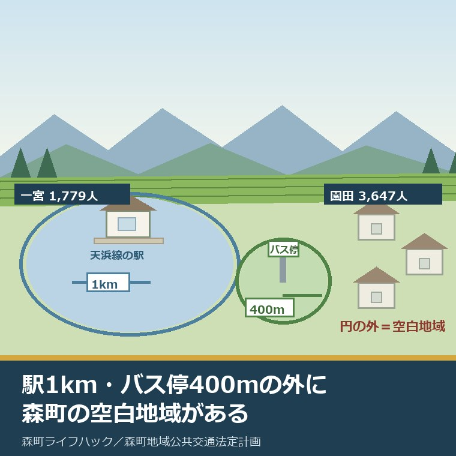
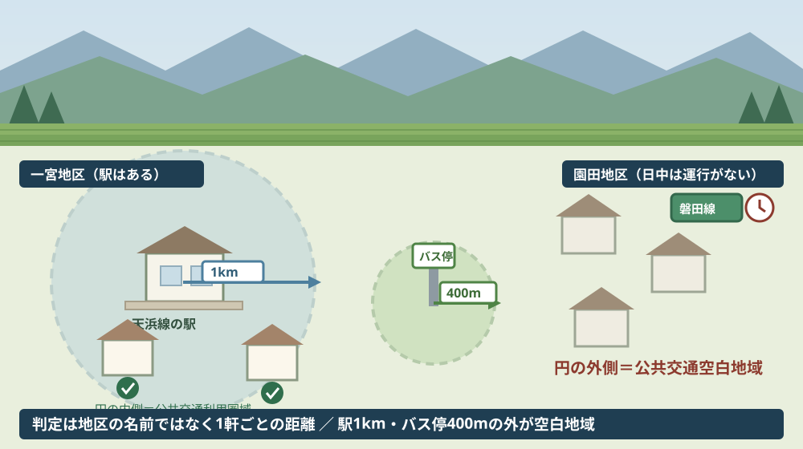
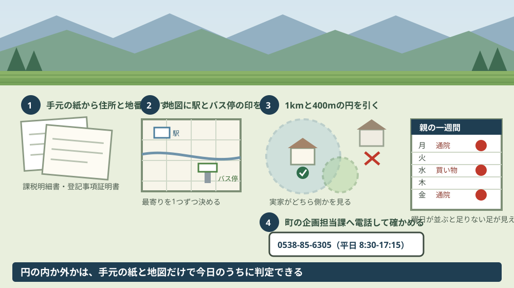

森町の公共交通空白地域は一宮・園田｜駅1km・バス停400m

この記事の要点
Q. 一宮の実家が「公共交通空白地域」だと聞きました。町の資料に、本当にそう書いてあるのですか。
A. 書いてあります。森町地域公共交通法定計画（令和6年3月）は空白地域を「鉄道駅から1㎞、路線バスのバス停から400ｍの範囲より外の地域」と定義し、一宮地区を「公共交通が利用しにくいエリアが存在」、園田地区を「運行がない日中や休日は実質的に公共交通空白地域」と記しています。
静岡県周智郡森町（遠州森町）の一宮地区、または園田地区に実家がある。親はまだ運転しているが、いつまで続けられるかは分からない。この記事は、その先を考え始めた家族に向けて書いています。
森町公式サイトに、森町地域公共交通法定計画という資料があります。ページの更新日は2024年3月29日、本編PDFは6.9メガバイトです。ここに、実家の地区が町からどう見られているかが書かれています。
先に結論を書きます。一宮地区と園田地区は、この計画の中で名指しされています。「そういう傾向がある」ではなく、地区名を挙げて書かれています。
今日は2026年8月28日です。計画に載っている数字を並べ、そのあとで1世帯あたり・1人あたりに割り戻します。数字の割り戻しは私の計算で、分母を必ず書きます。
公式情報から確定できること
2026年8月28日時点で、森町地域公共交通法定計画の本編から確認できたことを並べます。出典は記事の末尾に載せています。
一つ目。計画の期間は令和6年度から令和10年度の5年間です。計画本編は「本計画の期間は、令和６年度から令和 10 年度の５年間とします。」とし、対象区域を「森町全域」としています。
二つ目。空白地域の定義に、はっきり数字が入っています。計画本編は「『公共交通空白地域』とは、駅やバス停が一定の範囲に存在せず、地域公共交通が利用しづらい地域のことを言います。本計画においては、鉄道駅から 1 ㎞、路線バスのバス停から 400ｍの範囲より外の地域を指します。」と記しています。
三つ目。逆側の言葉も定義されています。同じページは「公共交通利用圏域」を、鉄道駅から1km以内、路線バスや町営バスのバス停から400m以内の地域としています。
四つ目。一宮地区について、こう書かれています。「一方で、一宮地区では、一定程度の人口集積がみられるものの、公共交通が利用しにくいエリアが存在しています。」
五つ目。園田地区については、時間帯で説明されています。「また、園田地区では磐田線が運行されていますが、運行がない日中や休日は実質的に公共交通空白地域となっています。」
六つ目。課題の整理でも、同じ2地区が繰り返されています。計画本編は「一宮地区や日中の磐田線沿線（園田地区）は公共交通空白地域であり、公共交通サービスを利用しにくい状況である。」と記しています。
七つ目。空白地域として名指しされている地区名は、この2つだけです。三倉地区と天方地区については「人口減少率が高く、商業施設や医療施設等の立地が少ない」と別の文脈で触れられていますが、空白地域の項では地区名として挙げられていません。
八つ目。森町の人口は17,457人です。令和2年の国勢調査の数字で、平成12年の20,689人から4回の調査で減り続けています。
九つ目。65歳以上は6,023人、34.50パーセントです。平成12年の24.13パーセントから、20年で10ポイント以上上がっています。
十番目。地区別の人口も載っています。令和2年で森6,548人、園田3,647人、飯田3,789人、一宮1,779人、天方1,033人、三倉661人です。
十一番目。世帯数は6,235世帯です。1世帯当たり2.80人で、平成27年より約100世帯増えています。人口が減って世帯が増える、という形です。
十二番目。高齢単身世帯は705世帯です。平成12年の305世帯から、令和2年の705世帯へ。地区別では森310、飯田114、一宮88、園田76、三倉62、天方55世帯です。
十三番目。高齢夫婦世帯は857世帯です。地区別では森328、飯田173、一宮125、園田118、三倉62、天方51世帯です。
十四番目。自家用車の保有は11,427台です。令和4年の数字で、計画は1世帯当たり1.84台とし、これが県内市町で1位だと記しています。
十五番目。運転免許の保有者は12,568人です。令和4年8月1日現在で、うち65歳以上が4,254人。計画は「免許保有者の3分の1以上が65歳以上」としています。
十六番目。天竜浜名湖鉄道の森町内の駅は5つです。戸綿、遠州森、森町病院前、円田、遠江一宮。令和3年度の1日当たり乗降者数は、遠州森582人が最も多く、森町病院前・円田・遠江一宮は100人未満です。
十七番目。患者バス一宮線の利用者は、令和3年度で5人です。計画本編は「利用者が最も少ないのは患者バス一宮線であり、令和３年度で５人となっています」と記しています。平成29年度の72人から93.06パーセント減です。
十八番目。ボランティアによる移動支援もあります。もり移動支援調整センター（運営主体は森町社会福祉協議会）が主体となり、運転手を担う一般ボランティアにより運行されています。運賃は無償で、ガソリン代は利用者負担です。
十九番目。空白地域を埋める手段として、地域タクシーが選ばれています。計画本編は「地域の実情に即した新たな交通手段として、地域タクシー（乗用タクシーの利活用）を導入します。」とし、対象を一宮地区・園田地区の日中の空白地域としています。
二十番目。手段の比較も表になっています。地域タクシーは有効性「○」、デマンド交通（乗合タクシー）は「△」、地域バス（自家用有償）は「✕」と評価されています。
二十一番目。評価指標は5つです。広域路線バスの利用者数（令和4年度309,804人→令和10年度310,000人）、町営バスの利用者数（9,098人→9,000人）、日中の空白地域への新たな交通手段の導入地区数（0地区→2地区）、森町公共交通利用券助成事業の申請数（92件→210件）、ボランティア移動支援の協力会員登録者数（15人→35人）です。

この絵で描きたかったのは、判定の単位が「地区」ではなく「家」だという点です。一宮地区に遠江一宮駅があっても、駅から1kmの円の外に建っている家は、この定義では空白地域に入ります。
もう一つ描いたのは、園田地区の円が、時間帯によって消えるということです。磐田線が走っていない日中と休日は、バス停の400mの円が実質的に無くなります。地図の上では圏域でも、火曜の午後2時には空白になります。
この数字を、1世帯・1人に割り戻す
ここからは、計画に載っている数字を割り戻します。分母を先に書き、私の計算であることを断っておきます。
まず、規模から。一宮地区1,779人と園田地区3,647人を足すと5,426人。町の人口17,457人で割ると31.1パーセントです。およそ3人に1人が、この2つの地区に住んでいます。
ただし、この5,426人がそのまま空白地域の居住者数ではありません。計画には、空白地域に住む人の数も世帯数も、数値としては載っていません。地図は載っていますが、注記に数字がないため、私はここを未確認のままにしています。
次に、高齢の世帯です。一宮と園田の高齢単身世帯は88＋76で164世帯、高齢夫婦世帯は125＋118で243世帯。合わせて407世帯です。町全体の1,562世帯で割ると26.1パーセントになります。
この407という数字を、私は不動産の目で読みます。407世帯は、いずれ相続か住み替えか施設入居のどれかが起きる家です。そして、そのすべてが、車がなければ買い物にも通院にも行けない場所にあります。
車の数も割り戻します。11,427台を6,235世帯で割ると1.83台。計画の記載どおり、県内市町で1位です。1世帯に2台近くある町だということです。
この1.84台という数字を、私はまだ強みと読むべきか弱点と読むべきか決めかねています。車が行き渡っている町だとも読めますし、車がないと成立しない町だとも読めます。ただ、免許保有者12,568人のうち4,254人が65歳以上、つまり33.9パーセントであることを重ねると、後者に近く見えます。
鉄道の数字も並べておきます。森町内5駅の令和3年度の1日当たり乗降者数を足すと1,030人です。乗降の延べ人数なので、往復する人を1人と数えれば実人数はさらに少なくなります。町の人口17,457人と比べると、鉄道が日常の足になっている人は限られています。
いちばん重いのは、患者バス一宮線の5人です。年間5人。運行日を平日245日として割ると、49日に1人という計算になります。路線として維持されていても、実際にはほとんど使われていません。
助成の申請件数も見ておきます。令和4年度の92件は、65歳以上6,023人の1.5パーセントです。令和10年度の目標210件でも3.5パーセント。制度はあっても、届いている人はまだ少ない規模だと分かります。
この助成の中身は森町の地域タクシーの予約方法を整理した記事にも書きました。地区ごとに足の形が違うことは親が車を返した日に地区へ残る足を並べた記事にまとめてあります。
良い点：この計画の、よくできているところ
森町地域公共交通法定計画には、評価したい点が5つあります。順に書きます。
一つ目。空白地域を、数字で定義したことです。1kmと400m。この2つの数字があるから、住民は自分の家が入るか外れるかを地図の上で判定できます。「交通が不便な地域」で止める計画も珍しくありません。
二つ目。地区名を書いたことです。一宮地区、園田地区と名指ししています。行政の資料で特定の地区を「不便だ」と書くのは、書かれた側の受け取り方を考えると、簡単な判断ではないはずです。
三つ目。園田地区について、時間帯で説明したことです。「運行がない日中や休日は実質的に公共交通空白地域」。路線があるかないかではなく、使いたい時間に走っているかで書いています。
四つ目。患者バス一宮線の5人という数字を、隠さずに載せたことです。自分たちが運行している便の利用者が年5人だと書くのは、気持ちのいい仕事ではありません。この数字があるから、転換の議論が始められます。
五つ目。評価指標に、あえて下がる目標を置いたことです。町営バスの利用者数は令和4年度9,098人に対し、令和10年度の目標が9,000人。増やすと書かずに、維持できれば合格という置き方をしています。人口が減る前提を、数字が正直に受けています。
もう一つ、実際の動きとして評価したい点があります。計画上の予定は、令和7年度に実証運行、令和8年度から令和10年度に本格運行でした。ところが実際には、令和6年10月1日に実証運行が始まり、令和7年10月1日から本格運行に入っています。おおむね1年前倒しです。評価指標の「導入地区数0地区→2地区」は、計画の最終年度を待たずに達成された形になります。
注文したい点：実家を持つ側から見て足りないところ
ここからは、森町の外に住みながら一宮や園田に実家を持っている側の立場で、一事業者としての注文を4つ書きます。批判ではなく、使う側から見た報告です。
一つ目。空白地域に何人が住んでいるのかが、数値で示されていません。地図は載っていますが、居住人口も世帯数も注記されていません。地区の人口は分かっても、円の外に何世帯あるかは分かりません。
この一行があるかないかで、読む側の受け取り方が変わります。「一宮地区の一部」と言われても、それが50世帯なのか500世帯なのかで、話の重さがまるで違います。
二つ目。公表されている本編PDFの表紙に「（案）」の表記が残っています。ページ本文には「計画を策定しました」と書かれているので、内容としては確定版だと読めますが、ファイルを開いた人は一瞬迷います。
三つ目。自分の家が円の内か外かを、住所から判定する手段がありません。掲載されているのは縮尺の小さい図です。実家の地番を入れたら「圏域内」「空白」が返る簡単な仕組みが1つあるだけで、確かめられる人がかなり増えます。
四つ目。本編に路線ごとの便数が載っていません。利用者数と町負担額は年度別に細かく出ているのに、1日何本走っているかは本編からは読み取れませんでした。この項目は別冊の参考資料に回されています。使う側がいちばん先に知りたい数字が、本編の外にあります。

この図で描きたかったのは、一段目が役場ではなく手元の紙から始まる点です。課税明細書か登記事項証明書があれば、実家の地番はその場で分かります。
右端に一週間の予定表を置いたのには理由があります。空白地域かどうかより先に効いてくるのは、親が実際に何曜日に外へ出るかです。通院と買い物の曜日が並べば、足りない足の形が具体的になります。
対案・結論：今日、ご家族が確かめられること
森町の外に住んでいても、今日のうちに進められることがあります。順番に5つ書きます。役場が閉まっている時間でも、四つ目までは自宅で終わります。
一つ目。実家の住所を、地区名まで確かめてください。一宮か園田か、それ以外か。ここで、あとの調べ方が変わります。
二つ目。地図で、実家から最寄りの天浜線の駅とバス停までの直線距離を測ってください。駅から1km、バス停から400m。この2つの数字より内側か外側かが、計画上の判定です。
三つ目。園田地区の実家なら、磐田線の時刻を平日の日中で見てください。計画が「運行がない日中や休日は実質的に空白」と書いている以上、朝夕の便があることは、日中の足があることを意味しません。
四つ目。親の一週間を曜日で書き出してください。通院、買い物、集まり。どの曜日のどの時間に外へ出るかが並ぶと、地域タクシーの平日8時30分から15時30分という枠に収まるかどうかが判定できます。
五つ目。分からないところは、町の企画担当課（0538-85-6305）へ実家の住所を伝えて聞いてください。地域タクシーの対象地区かどうかも、同じ電話で確認できます。
ここまでやっても、実家を売るか残すかを今日決める必要はありません。今日の成果は「実家が円の内側か外側かを、自分で判定した」という一点で十分です。決めるための材料が1つ増えた状態を、私は前進として扱っています。
地区ごとの暮らしの違いは森町の中心部だけ見て町全体を知ったつもりにならない記事に、鉄道の本数の実際は天浜線の駅が近いという言葉を本数と接続から見直した記事に書きました。町全体で車なしの暮らしが回るかは森町で車なし生活は可能かを整理したページにまとめてあります。
家族に残す記録
確かめた内容は、その日のうちに1枚にまとめてください。次に開くのが半年後でも、同じ場所から再開できます。
書き出す項目は7つです。①実家の住所と地区名 ②最寄りの天浜線の駅名と直線距離 ③最寄りのバス停名と路線名と直線距離 ④その路線の平日日中の便の有無 ⑤親の通院日と買い物日の曜日 ⑥地域タクシーの対象地区かどうか ⑦確認した日。
加えて、確認できなかったことも同じ紙に残します。「バス停までの距離が測れなかった」も記録です。次に役場へ電話するとき、そのまま質問文になります。
最後に、親が今も運転しているかどうかを1行で書いておいてください。運転をやめた日から、この記録の意味が変わります。それまでは参考資料ですが、その日からは生活の設計図になります。
大石の視点
私は磐田市で小さな不動産業を営んでいて、森町の空き家や実家じまいの相談も受けています。ここからは公表資料の話ではなく、私がどう見ているかを書きます。
この件について、私が実際に立ち会った場面は手元にありません。だから体験としてではなく、意見として書きます。
私がこの計画を読んで最初に思ったのは、「空白地域」という言葉が、不動産の言葉に翻訳できるということです。駅から1km、バス停から400m。これは、そのまま将来の買い手・借り手が見る条件です。
物件資料の交通欄には、たいてい駅までの徒歩分数が書かれます。ただし、その一行は「駅までの距離」を測っているだけで、「その時間に電車やバスが来るか」は測っていません。森町の場合、この差が特に大きく出ます。
そして、判定は家ごとです。同じ一宮地区の中でも、円の内側の家と外側の家では、10年後の売りやすさが変わります。地区名で一括りにできる話ではありません。
ここで気になるのが、担い手の側です。空白を埋める手段として選ばれた地域タクシーは、袋井タクシーという民間の会社の車と運転手で回っています。計画本編には、令和4年度に町内のタクシー事業者1社が廃業し、町内に営業所がないとも書かれています。
制度としては筋が通っています。それでも、これが令和10年度の先まで続けられるかどうかは、公表資料からは判断できません。分からないことは分からないと書いておきます。
持ち主の側にできることは、少ないけれどあります。自分の実家が円の内側か外側かを知っておく。それだけで、貸すにしても売るにしても、話が来たときに即答できる材料が1つ増えます。
実務としては、この先に道路、境界、地目、登記、残置物、維持費という順番が続きます。足の確認は、そのどれよりも先に来る項目です。足がある家と、ない家では、住み続けられる年数が変わります。
まとめ
この記事で確認した事実を、最後に並べ直します。すべて2026年8月28日時点で公表されている内容です。
- 森町地域公共交通法定計画（令和6年3月）。ページ更新日は2024年3月29日、本編は6.9メガバイト。担当は町の企画担当課（0538-85-6305）
- 計画期間は令和6年度から令和10年度の5年間、対象区域は森町全域
- 空白地域の定義は「鉄道駅から1㎞、路線バスのバス停から400ｍの範囲より外の地域」
- 一宮地区は「一定程度の人口集積がみられるものの、公共交通が利用しにくいエリアが存在」
- 園田地区は「磐田線が運行されていますが、運行がない日中や休日は実質的に公共交通空白地域」
- 空白地域として名指しされている地区名は一宮・園田の2つ。空白地域の居住人口・世帯数の数値記載はない
- 令和2年の人口は17,457人、65歳以上6,023人（34.50パーセント）、世帯6,235、1世帯2.80人
- 地区別人口は森6,548、飯田3,789、園田3,647、一宮1,779、天方1,033、三倉661人
- 高齢単身世帯705、高齢夫婦世帯857。うち一宮・園田は164＋243で407世帯（私の計算では町全体の26.1パーセント）
- 自家用車11,427台、1世帯当たり1.84台で県内市町1位。免許保有12,568人のうち65歳以上4,254人
- 森町内の天浜線5駅の令和3年度乗降者数は遠州森582人が最多、森町病院前・円田・遠江一宮は100人未満
- 患者バス一宮線の令和3年度の利用者は5人（平成29年度比93.06パーセント減）
- もり移動支援調整センター（森町社会福祉協議会）のボランティア移動支援があり、運賃無償・ガソリン代は利用者負担
- 空白地域の対応手段として地域タクシーを導入。地域タクシー「○」、デマンド交通「△」、地域バス「✕」と評価
- 評価指標は5つ。導入地区数0地区→2地区、利用券助成申請92件→210件、ボランティア協力会員15人→35人など
- 計画上は令和7年度に実証運行・令和8〜10年度に本格運行の予定だったが、実際は令和6年10月1日に実証運行、令和7年10月1日に本格運行。おおむね1年前倒し
- 私の計算では、一宮1,779人＋園田3,647人＝5,426人は町人口の31.1パーセント。ただし空白地域の居住者数ではない
よくある質問
Q1. 森町の「公共交通空白地域」とは、どこからどこまでを指しますか。
A1. 森町地域公共交通法定計画（令和6年3月）は「本計画においては、鉄道駅から1㎞、路線バスのバス停から400ｍの範囲より外の地域を指します」と定義しています。逆に「公共交通利用圏域」は、鉄道駅から1km以内、路線バスや町営バスのバス停から400m以内です。地区名としては一宮地区と園田地区が本文で挙げられており、他の地区名は空白地域として名指しされていません。
Q2. 一宮地区には遠江一宮駅があるのに、なぜ空白地域なのですか。
A2. 駅があることと、駅から1km以内に住んでいることは別だからです。森町地域公共交通法定計画は一宮地区について「一定程度の人口集積がみられるものの、公共交通が利用しにくいエリアが存在しています」と記しています。園田地区については、磐田線が走っているものの「運行がない日中や休日は実質的に公共交通空白地域となっています」としています。
Q3. 空白地域を埋めるために、森町は何をすることになっていますか。
A3. 森町地域公共交通法定計画は「地域の実情に即した新たな交通手段として、地域タクシー（乗用タクシーの利活用）を導入します」としています。計画上の予定は令和6年度に運行計画の作成、令和7年度に実証運行、令和8年度から令和10年度に本格運行でした。実際には令和6年10月1日から実証運行が始まり、令和7年10月1日に本格運行へ移っています。
最後に一つだけ。ここに書いた人口、世帯数、台数、利用者数、評価指標は、いずれも森町地域公共交通法定計画（令和6年3月）に載っている数字を2026年8月28日に確認したものです。空白地域に住む人口と世帯数、路線ごとの1日の便数、令和5年度以降の利用者数の推移、次の計画見直しの具体的な時期は、本編からは確認できていません。人口や高齢化の数値は令和2年の国勢調査、自家用車と免許の数値は令和4年のもので、現在の状況とは差があります。実家について判断する前に、必ず町の企画担当課（0538-85-6305）へご確認ください。
参考にした公式情報
- 森町地域公共交通法定計画／静岡県森町（「更新日：2024年03月29日」と表示されていること、計画の区域が「森町全域」、期間が「令和6年度(2024年度)から令和10年度(2028年度)までの5年間」と案内されていること、「公共交通に関わる様々な主体が相互に協力して、本町にとって持続可能かつ効果的な公共交通網を形成し、公共交通サービスの維持確保を図ることを目的」として計画を策定したと記されていること、基本理念が「持続可能なまちづくりを支える公共交通の構築 ～町民・来訪者から選ばれる公共交通～」であること、掲載資料が本編（6.9MB）・参考資料1〜4（13.3MB）・参考資料5〜7（12.1MB）の3点であること、担当が町の企画担当課 企画係（電話0538-85-6305）であることを2026年8月28日に確認）
- 森町地域公共交通法定計画【本編】／静岡県森町（表紙が「森町地域公共交通法定計画（案） 令和６年３月 静岡県森町」であること、「本計画の期間は、令和６年度から令和 10 年度の５年間とします。」「本計画の対象区域は、『森町全域』とします。」と記されていること、「『公共交通空白地域』とは、駅やバス停が一定の範囲に存在せず、地域公共交通が利用しづらい地域のことを言います。本計画においては、鉄道駅から 1 ㎞、路線バスのバス停から 400ｍの範囲より外の地域を指します。」と定義されていること、「一宮地区では、一定程度の人口集積がみられるものの、公共交通が利用しにくいエリアが存在しています。」「また、園田地区では磐田線が運行されていますが、運行がない日中や休日は実質的に公共交通空白地域となっています。」と記されていること、令和2年の人口が17,457人・65歳以上6,023人（34.50%）・世帯6,235・1世帯当たり2.80人であること、地区別人口が森6,548・一宮1,779・園田3,647・飯田3,789・三倉661・天方1,033人であること、高齢単身世帯が705世帯（森310・飯田114・一宮88・園田76・三倉62・天方55）、高齢夫婦世帯が857世帯（森328・飯田173・一宮125・園田118・三倉62・天方51）であること、令和4年の自家用車保有が11,427台で1世帯当たり1.84台と県内市町1位であること、令和4年8月1日現在の運転免許保有が12,568人でうち65歳以上4,254人であること、天浜線の町内5駅が戸綿・遠州森・森町病院前・円田・遠江一宮で令和3年度の1日当たり乗降者数は遠州森582人が最多であること、「利用者が最も少ないのは患者バス一宮線であり、令和３年度で５人となっています」と記されていること、もり移動支援調整センター（森町社会福祉協議会）のボランティア移動支援が無償（ガソリン代は利用者負担）であること、「地域の実情に即した新たな交通手段として、地域タクシー（乗用タクシーの利活用）を導入します。」と記され対象が一宮地区・園田地区の日中の空白地域であること、導入スケジュールが令和6年度に運行計画の検討・作成、令和7年度に実証運行、令和8〜10年度に本格運行とされていること、評価指標が広域路線バス利用者数309,804人→310,000人・町営バス利用者数9,098人→9,000人・新たな交通手段の導入地区数0地区→2地区・公共交通利用券助成事業の申請数92件→210件・ボランティア移動支援の協力会員登録者数15人→35人の5つであること、令和4年度に町内のタクシー事業者1社が廃業し町内に営業所がないと記されていることを2026年8月28日に確認）
- 一宮地区及び園田地区の地域タクシーのご案内／静岡県森町（「更新日：2025年10月01日」と表示されていること、「令和6年10月1日から、一宮地区及び園田地区で、日中の交通空白地域解消のため、自宅と決められた指定目的地間の移動のみを可能とした、地域タクシーの実証運行を行ってきました。」「令和7年10月1日から本格運行を開始します。」と記されていること、運行日が月〜金曜日（平日のみ）で運行時間が8時30分から15時30分であること、事前の利用者登録と利用チケットの申請が必要であること、担当が町の企画担当課（電話0538-85-6305）であることを2026年8月28日に確認）
- 森町の公共交通について／静岡県森町（「更新日：2025年10月01日」と表示されていること、森町の公共交通として森町営バス・一宮地区の地域タクシー・園田地区の地域タクシーが並べて案内されていること、問い合わせ先の電話番号が0538-85-6305であることを2026年8月28日に確認）
- 森町公共交通利用券助成事業／静岡県森町（「更新日：2025年05月01日」と表示されていること、対象が公共交通利用券購入日現在で75歳以上の町民、または65歳以上であり、かつ、運転経歴証明書の交付を受けた町民であること、助成額が「1人につき1年度（4月1日～翌年3月31日）当たり上限3,000円」であること、申請が購入した日から起算して3か月以内であること、担当が福祉課地域福祉係（電話0538-85-1800）であることを2026年8月28日に確認）

最終確認日：2026-08-28 ／ 本記事は公表情報と執筆者の見解を分けて記載しています。公共交通空白地域に住む人口と世帯数、路線ごとの1日の便数、令和5年度以降の利用者数の推移、次の計画見直しの具体的な時期は、森町地域公共交通法定計画の本編からは確認できていません。人口・世帯・高齢化の数値は令和2年の国勢調査、自家用車と運転免許の数値は令和4年のもので、現在の状況とは差があります。割合の計算は執筆者が公表値を分母で割った概算で、個別の住所の判定を示すものではありません。制度・数値は変更されることがあります。実家について判断する前に、必ず町の企画担当課（0538-85-6305）へご確認ください。